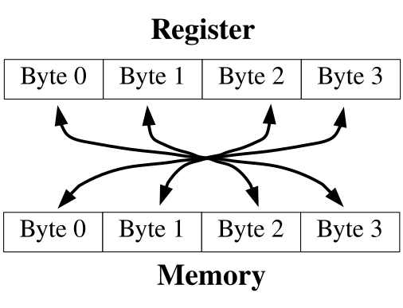
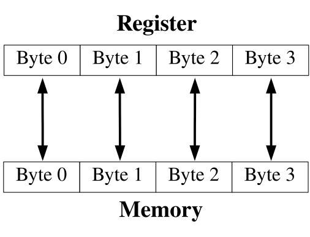

Counting Like a Computer¶
Counting¶
Counting Like a Human¶
In many ways, computers count just like humans. So, before we start learning how computers count, let’s take a deeper look at how we count.
How many fingers do you have? No, it’s not a trick question. Humans (normally) have ten fingers. Why is that significant? Look at our numbering system. At what point does a one-digit number become a two-digit number? That’s right, at ten. Humans count and do math using a base ten numbering system. Base ten means that we group everything in tens. Let’s say we’re counting sheep. 1, 2, 3, 4, 5, 6, 7, 8, 9, 10. Why did we all of a sudden now have two digits, and re-use the 1? That’s because we’re grouping our numbers by ten, and we have 1 group of ten sheep. Okay, let’s go to the next number 11. That means we have 1 group of ten sheep, and 1 sheep left ungrouped. So we continue - 12, 13, 14, 15, 16, 17, 18, 19, 20. Now we have 2 groups of ten. 21 - 2 groups of ten, and 1 sheep ungrouped. 22 - 2 groups of ten, and 2 sheep ungrouped. So, let’s say we keep counting, and get to 97, 98, 99, and 100. Look, it happened again! What happens at 100? We now have ten groups of ten. At 101 we have ten groups of ten, and 1 ungrouped sheep. So we can look at any number like this. If we counted 60879 sheep, that would mean that we had 6 groups of ten groups of ten groups of ten groups of ten, 0 groups of ten groups of ten groups of ten, 8 groups of ten groups of ten, 7 groups of ten, and 9 sheep left ungrouped.
So, is there anything significant about grouping things by ten? No! It’s just that grouping by ten is how we’ve always done it, because we have ten fingers. We could have grouped at nine or at eleven (in which case we would have had to make up a new symbol). The only difference between the different groupings of numbers is that we have to re-learn our multiplication, addition, subtraction, and division tables for each grouping. The rules haven’t changed, just the way we represent them. Also, some of our tricks that we learned don’t always apply, either. For example, let’s say we grouped by nine instead of ten. Moving the decimal point one digit to the right no longer multiplies by ten, it now multiplies by nine. In base nine, 500 is only nine times as large as 50.
Counting Like a Computer¶
The question is, how many fingers does the computer have to count with? The computer only has two fingers. So that means all of the groups are groups of two. So, let’s count in binary - 0 (zero), 1 (one), 10 (two - one group of two), 11 (three - one group of two and one left over), 100 (four - two groups of two), 101 (five - two groups of two and one left over), 110 (six - two groups of two and one group of two), and so on. In base two, moving the decimal one digit to the right multiplies by two, and moving it to the left divides by two. Base two is also referred to as binary.
The nice thing about base two is that the basic math tables are very short. In base ten, the multiplication tables are ten columns wide, and ten columns tall. In base two, it is very simple:
Table of binary addition
+ | 0 | 1
--+-----+-----
0 | 0 | 0
--+-----+-----
1 | 1 | 10
Table of binary multiplication
* | 0 | 1
--+-----+-----
0 | 0 | 0
--+-----+-----
1 | 0 | 1
So, let’s add the numbers 10010101 with 1100101:
10010101
+ 1100101
-----------
11111010
Now, let’s multiply them:
10010101
* 1100101
-----------
10010101
00000000
10010101
00000000
00000000
10010101
10010101
---------------
11101011001001
Conversions Between Binary and Decimal¶
Let’s learn how to convert numbers from binary (base two) to decimal (base ten). This is actually a rather simple process. If you remember, each digit stands for some grouping of two. So, we just need to add up what each digit represents, and we will have a decimal number. Take the binary number 10010101. To find out what it is in decimal, we take it apart like this:
1 0 0 1 0 1 0 1
| | | | | | | |
| | | | | | | Individual units (2^0)
| | | | | | 0 groups of 2 (2^1)
| | | | | 1 group of 4 (2^2)
| | | | 0 groups of 8 (2^3)
| | | 1 group of 16 (2^4)
| | 0 groups of 32 (2^5)
| 0 groups of 64 (2^6)
1 group of 128 (2^7)
and then we add all of the pieces together, like this:
1*128 + 0*64 + 0*32 + 1*16 + 0*8 + 1*4 + 0*2 + 1*1 =
128 + 16 + 4 + 1 =
149
So 10010101 in binary is 149 in decimal. Let’s look at 1100101. It can be written as
1*64 + 1*32 + 0 * 16 + 0*8 + 1*4 + 0*2 + 1*1 =
64 + 32 + 4 + 1 =
101
So we see that 1100101 in binary is 101 in decimal. Let’s look at one more number, 11101011001001. You can convert it to decimal by doing
1*8192 + 1*4096 + 1*2048 + 0*1024 + 1*512 + 0*256
+ 1*128 + 1*64 + 0*32 + 0*16 + 1*8 + 0*4
+ 0*2 + 1*1 =
8192 + 4096 + 2048 + 512 + 128 + 64 + 8 + 1 =
15049
Now, if you’ve been paying attention, you have noticed that the numbers we just converted are the same ones we used to multiply with earlier. So, let’s check our results: 101 * 149 = 15049. It worked!
Now let’s look at going from decimal back to binary. In order to do the conversion, you have to divide the number into groups of two. So, let’s say you had the number 17. If you divide it by two, you get 8 with 1 left over. So that means there are 8 groups of two, and 1 ungrouped. That means that the rightmost digit will be 1. Now, we have the rigtmost digit figured out, and 8 groups of 2 left over. Now, let’s see how many groups of two groups of two we have, by dividing 8 by 2. We get 4, with nothing left over. That means that all groups two can be further divided into more groups of two. So, we have 0 groups of only two. So the next digit to the left is 0. So, we divide 4 by 2 and get two, with 0 left over, so the next digit is 0. Then, we divide 2 by 2 and get 1, with 0 left over. So the next digit is 0. Finally, we divide 1 by 2 and get 0 with 1 left over, so the next digit to the left is 1. Now, there’s nothing left, so we’re done. So, the number we wound up with is 10001.
Previously, we converted to binary 11101011001001 to decimal 15049. Let’s do the reverse to make sure that we did it right:
15049 / 2 = 7524 Remaining 1
7524 / 2 = 3762 Remaining 0
3762 / 2 = 1881 Remaining 0
1881 / 2 = 940 Remaining 1
940 / 2 = 470 Remaining 0
470 / 2 = 235 Remaining 0
235 / 2 = 117 Remaining 1
117 / 2 = 58 Remaining 1
58 / 2 = 29 Remaining 0
29 / 2 = 14 Remaining 1
14 / 2 = 7 Remaining 0
7 / 2 = 3 Remaining 1
3 / 2 = 1 Remaining 1
1 / 2 = 0 Remaining 1
Then, we put the remaining numbers back together, and we have the original number! Remember the first division remainder goes to the far right, so from the bottom up you have 11101011001001.
Each digit in a binary number is called a bit, which stands for binary digit. Remember, computers divide up their memory into storage locations called bytes. Each storage location on an x86 processor (and most others) is 8 bits long. Earlier we said that a byte can hold any number between 0 and 255. The reason for this is that the largest number you can fit into 8 bits is 255. You can see this for yourself if you convert binary 11111111 into decimal:
11111111 =
(1 * 2^7) + (1 * 2^6) + (1 * 2^5) + (1 * 2^4) + (1 * 2^3)
+ (1 * 2^2) + (1 * 2^1) + (1 * 2^0) =
128 + 64 + 32 + 16 + 8 + 4 + 2 + 1 =
255
The largest number that you can hold in 16 bits is 65535. The largest number you can hold in 32 bits is 4294967295 (4 billion). The largest number you can hold in 64 bits is 18,446,744,073,709,551,615. The largest number you can hold in 128 bits is 340,282,366,920,938,463,463,374,607,431,768,211,456. Anyway, you see the picture. For x86 processors, most of the time you will deal with 4-byte numbers (32 bits), because that’s the size of the registers.
Truth, Falsehood, and Binary Numbers¶
Now we’ve seen that the computer stores everything as sequences of 1’s and 0’s. Let’s look at some other uses of this. What if, instead of looking at a sequence of bits as a number, we instead looked at it as a set of switches. For example, let’s say there are four switches that control lighting in the house. We have a switch for outside lights, a switch for the hallway lights, a switch for the living room lights, and a switch for the bedroom lights. We could make a little table showing which of these were on and off, like so:
Outside Hallway Living Room Bedroom
On Off On On
It’s obvious from looking at this that all of the lights are on except the hallway ones. Now, instead of using the words “On” and “Off”, let’s use the numbers 1 and 0. 1 will represent on, and 0 will represent off. So, we could represent the same information as
Outside Hallway Living Room Bedroom
1 0 1 1
Now, instead of having labels on the light switches, let’s say we just memorized which position went with which switch. Then, the same information could be represented as
1 0 1 1
or as
1011
This is just one of many ways you can use the computers storage locations to represent more than just numbers. The computers memory just sees numbers, but programmers can use these numbers to represent anything their imaginations can come up with. They just sometimes have to be creative when figuring out the best representation.
Not only can you do regular arithmetic with binary numbers, they also have a few operations of their own, called binary or logical operations . The standard binary operations are
AND
OR
NOT
XOR
Before we look at examples, I’ll describe them for you. AND takes two bits and returns one bit. AND will return a 1 only if both bits are 1, and a 0 otherwise. For example, 1 AND 1 is 1, but 1 AND 0 is 0, 0 AND 1 is 0, and 0 AND 0 is 0.
OR takes two bits and returns one bit. It will return 1 if either of the original bits is 1. For example, 1 OR 1 is 1, 1 OR 0 is one, 0 OR 1 is 1, but 0 OR 0 is 0.
NOT only takes one bit and returns its opposite. NOT 1 is 0 and NOT 0 is 1.
Finally, XOR is like OR, except it returns 0 if both bits are 1.
Computers can do these operations on whole registers at a time. For example, if a register has 10100010101010010101101100101010 and another one has 10001000010101010101010101111010, you can run any of these operations on the whole registers. For example, if we were to AND them, the computer will run from the first bit to the 32nd and run the AND operation on that bit in both registers. In this case:
10100010101010010101101100101010 AND
10001000010101010101010101111010
--------------------------------
10000000000000010101000100101010
You’ll see that the resulting set of bits only has a one where both numbers had a one, and in every other position it has a zero. Let’s look at what an OR looks like:
10100010101010010101101100101010 OR
10001000010101010101010101111010
--------------------------------
10101010111111010101111101111010
In this case, the resulting number has a 1 where either number has a 1 in the given position. Let’s look at the NOT operation:
NOT 10100010101010010101101100101010
------------------------------------
01011101010101101010010011010101
This just reverses each digit. Finally, we have XOR, which is like an OR, except if both digits are 1, it returns 0.
10100010101010010101101100101010 XOR
10001000010101010101010101111010
--------------------------------
00101010111111000000111001010000
This is the same two numbers used in the OR operation, so you can compare how they work. Also, if you XOR a number with itself, you will always get 0, like this:
10100010101010010101101100101010 XOR
10100010101010010101101100101010
--------------------------------
00000000000000000000000000000000
These operations are useful for two reasons:
The computer can do them extremely fast
You can use them to compare many truth values at the same time
You may not have known that different instructions execute at different speeds. It’s true, they do. And these operations are the fastest on most processors. For example, you saw that XORing a number with itself produces 0. Well, the XOR operation is faster than the loading operation, so many programmers use it to load a register with zero. For example, the code
movl $0, %eax
is often replaced by
xorl %eax, %eax
We’ll discuss speed more in Optimization, but I want you to see how programmers often do tricky things, especially with these binary operators, to make things fast. Now let’s look at how we can use these operators to manipulate true/false values. Earlier we discussed how binary numbers can be used to represent any number of things. Let’s use binary numbers to represent what things my Dad and I like. First, let’s look at the things I like:
Food: yes
Heavy Metal Music: yes
Wearing Dressy Clothes: no
Football: yes
Now, let’s look at what my Dad likes:
Food: yes
Heavy Metal Music: no
Wearing Dressy Clothes: yes
Football: yes
Now, let’s use a 1 to say yes we like something, and a 0 to say no we don’t. Now we have:
Me
Food: 1
Heavy Metal Music: 1
Wearing Dressy Clothes: 0
Football: 1
Dad
Food: 1
Heavy Metal Music: 0
Wearing Dressy Clothes: 1
Football: 1
Now, if we just memorize which position each of these are in, we have
Me
1101
Dad
1011
Now, let’s see we want to get a list of things both my Dad and I like. You would use the AND operation. So
1101 AND
1011
--------
1001
Which translates to
Things we both like
Food: yes
Heavy Metal Music: no
Wearing Dressy Clothes: no
Football: yes
Remember, the computer has no idea what the ones and zeroes represent. That’s your job and your program’s job. If you wrote a program around this representation your program would at some point examine each bit and have code to tell the user what it’s for (if you asked a computer what two people agreed on and it answered 1001, it wouldn’t be very useful). Anyway, let’s say we want to know the things that we disagree on. For that we would use XOR, because it will return 1 only if one or the other is 1, but not both. So
1101 XOR
1011
--------
0110
And I’ll let you translate that back out.
The previous operations: AND, OR, NOT, and XOR are called boolean operators because they were first studied by George Boole. So, if someone mentiones boolean operators or boolean algebra, you now know what they are talking about.
In addition to the boolean operations, there are also two binary operators that aren’t boolean, shift and rotate. Shifts and rotates each do what their name implies, and can do so to the right or the left. A left shift moves each digit of a binary number one space to the left, puts a zero in the ones spot, and chops off the furthest digit to the left. A left rotate does the same thing, but takes the furthest digit to the left and puts it in the ones spot. For example,
Shift left 10010111 = 00101110
Rotate left 10010111 = 00101111
Notice that if you rotate a number for every digit it has (i.e. - rotating a 32-bit number 32 times), you wind up with the same number you started with. However, if you shift a number for every digit you have, you wind up with 0. So, what are these shifts useful for? Well, if you have binary numbers representing things, you use shifts to peek at each individual value. Let’s say, for instance, that we had my Dad’s likes stored in a register (32 bits). It would look like this:
00000000000000000000000000001011
Now, as we said previously, this doesn’t work as program output. So, in order to do output, we would need to do shifting and masking. Masking is the process of eliminating everything you don’t want. In this case, for every value we are looking for, we will shift the number so that value is in the ones place, and then mask that digit so that it is all we see. Masking is accomplished by doing an AND with a number that has the bits we are interested in set to 1. For example, let’s say we wanted to print out whether my Dad likes dressy clothes or not. That data is the second value from the right. So, we have to shift the number right 1 digit so it looks like this:
00000000000000000000000000000101
and then, we just want to look at that digit, so we mask it by ANDing it with 00000000000000000000000000000001.
00000000000000000000000000000101 AND
00000000000000000000000000000001
-----------------------------------
00000000000000000000000000000001
This will make the value of the register 1 if my Dad likes dressy clothes, and 0 if he doesn’t. Then we can do a comparison to 1 and print the results. The code would look like this:
#NOTE - assume that the register %ebx holds
# my Dad's preferences
movl %ebx, %eax #This copies the information into %eax so
#we don't lose the original data
shrl $1, %eax #This is the shift operator. It stands
#for Shift Right Long. This first number
#is the number of positions to shift,
#and the second is the register to shift
#This does the masking
andl $0b00000000000000000000000000000001, %eax
#Check to see if the result is 1 or 0
cmpl $0b00000000000000000000000000000001, %eax
je yes_he_likes_dressy_clothes
jmp no_he_doesnt_like_dressy_clothes
And then we would have two labels which printed something about whether
or not he likes dressy clothes and then exits. The 0b notation means
that what follows is a binary number. In this case it wasn’t needed,
because 1 is the same in any numbering system, but I put it there for
clarity. We also didn’t need the 31 zeroes, but I put them in to make a
point that the number you are using is 32 bits.
When a number represents a set of options for a function or system call,
the individual true/false elements are called flags. Many system calls
have numerous options that are all set in the same register using a
mechanism like we’ve described. The open system call, for
example, has as its second parameter a list of flags to tell the
operating system how to open the file. Some of the flags include:
O_WRONLYThis flag is
0b00000000000000000000000000000001in binary, or01in octal (or any number system for that matter). This says to open the file in write-only mode.O_RDWRThis flag is
0b00000000000000000000000000000010in binary, or02in octal. This says to open the file for both reading and writing.O_CREATThis flag is
0b00000000000000000000000001000000in binary, or0100in octal. It means to create the file if it doesn’t already exist.O_TRUNCThis flag is
0b00000000000000000000001000000000in binary, or01000in octal. It means to erase the contents of the file if the file already exists.O_APPENDThis flag is
0b00000000000000000000010000000000in binary, or02000in octal. It means to start writing at the end of the file rather than at the beginning.
To use these flags, you simply OR them together in the combination that
you want. For example, to open a file in write-only mode, and have it
create the file if it doesn’t exist, I would use O_WRONLY (01) and
O_CREAT (0100). OR’d together, I would have 0101.
Note that if you don’t set either O_WRONLY or O_RDWR, then the
file is automatically opened in read-only mode (O_RDONLY, except
that it isn’t really a flag since it’s zero).
Many functions and system calls use flags for options, as it allows a single word to hold up to 32 possible options if each option is represented by a single bit.
The Program Status Register¶
We’ve seen how bits on a register can be used to give the answers of
yes/no and true/false statements. On your computer, there is a register
called the program status register. This register holds a lot of
information about what happens in a computation. For example, have you
ever wondered what would happen if you added two numbers and the result
was larger than would fit in a register? The program status register has
a flag called the carry flag. You can test it to see if the last
computation overflowed the register. There are flags for a number of
different statuses. In fact, when you do a compare (cmpl)
instruction, the result is stored in this register. The conditional jump
instructions (jge, jne, etc) use these results to tell whether
or not they should jump. jmp, the unconditional jump, doesn’t
care what is in the status register, since it is unconditional.
Let’s say you needed to store a number larger than 32 bits. So, let’s say the number is 2 registers wide, or 64 bits. How could you handle this? If you wanted to add two 64 bit numbers, you would add the least significant registers first. Then, if you detected an carry, you could add 1 to the most significant register. In fact, this is probably the way you learned to do decimal addition. If the result in one column is more than 9, you simply carried the number to the next most significant column. If you added 65 and 37, first you add 7 and 4 to get 12. You keep the 2 in the right column, and carry the one to the next column. There you add 6, 3, and the 1 you carried. This results in 10. So, you keep the zero in that column and carry the one to the next most significant column, which is empty, so you just put the one there. Luckily, 32 bits is usually big enough to hold the numbers we use regularly.
Additional program status register flags are examined in Common x86 Instructions.
Other Numbering Systems¶
What we have studied so far only applies to positive integers. However, real-world numbers are not always positive integers. Negative numbers and numbers with decimals are also used.
Floating-point Numbers¶
So far, the only numbers we’ve dealt with are integers - numbers with no decimal point. Computers have a general problem with numbers with decimal points, because computers can only store fixed-size, finite values. Decimal numbers can be any length, including infinite length (think of a repeating decimal, like the result of 1 / 3).
The way a computer handles decimals is by storing them at a fixed precision (number of significant bits). A computer stores decimal numbers in two parts - the exponent and the mantissa. The mantissa contains the actual digits that will be used, and the exponent is what magnitude the number is. For example, 12345.2 can be represented as 1.23452 * 10^4. The mantissa is 1.23452 and the exponent is 4 with a base of 10. Computers, however, use a base of 2. All numbers are stored as X.XXXXX * 2^XXXX. The number 1, for example, is stored as 1.00000 * 2^0. Separating the mantissa and the exponent into two different values is called a floating point representation, because the position of the significant digits with respect to the decimal point can vary based on the exponent.
Now, the mantissa and the exponent are only so long, which leads to some interesting problems. For example, when a computer stores an integer, if you add 1 to it, the resulting number is one larger. This does not necessarily happen with floating point numbers. If the number is sufficiently big, adding 1 to it might not even register in the mantissa (remember, both parts are only so long). This affects several things, especially order of operations. If you add 1.0 to a given floating point number, it might not even affect the number if it is large enough. For example, on x86 platforms, a four-byte floating-point number, although it can represent very large numbers, cannot have 1.0 added to it past 16777216.0, because it is no longer significant. The number no longer changes when 1.0 is added to it. So, if there is a multiplication followed by an addition it may give a different result than if the addition is performed first.
You should note that it takes most computers a lot longer to do floating-point arithmetic than it does integer arithmetic. So, for programs that really need speed, integers are mostly used.
Negative Numbers¶
How would you think that negative numbers on a computer might be
represented? One thought might be to use the first digit of a number as
the sign, so 00000000000000000000000000000001 would represent the
number 1, and 10000000000000000000000000000001 would represent -1.
This makes a lot of sense, and in fact some old processors work this
way. However, it has some problems. First of all, it takes a lot more
circuitry to add and subtract signed numbers represented this way. Even
more problematic, this representation has a problem with the number 0.
In this system, you could have both a negative and a positive 0. This
leads to a lot of questions, like “should negative zero be equal to
positive zero?”, and “What should the sign of zero be in various
circumstances?”.
These problems were overcome by using a representation of negative numbers called two’s complement representation. To get the negative representation of a number in two’s complement form, you must perform the following steps:
Perform a NOT operation on the number
Add one to the resulting number
So, to get the negative of 00000000000000000000000000000001, you
would first do a NOT operation, which gives
11111111111111111111111111111110, and then add one, giving
11111111111111111111111111111111. To get negative two, first take
00000000000000000000000000000010. The NOT of that number is
11111111111111111111111111111101. Adding one gives
11111111111111111111111111111110. With this representation, you can
add numbers just as if they were positive, and come out with the right
answers. For example, if you add one plus negative one in binary, you
will notice that all of the numbers flip to zero. Also, the first digit
still carries the sign bit, making it simple to determine whether or not
the number is positive or negative. Negative numbers will always have a
1 in the leftmost bit. This also changes which numbers are valid for
a given number of bits. With signed numbers, the possible magnitude of
the values is split to allow for both positive and negative numbers. For
example, a byte can normally have values up to 255. A signed byte,
however, can store values from -128 to 127.
One thing to note about the two’s complement representation of signed
numbers is that, unlike unsigned quantities, if you increase the number
of bits, you can’t just add zeroes to the left of the number. For
example, let’s say we are dealing with four-bit quantities and we had
the number -3, 1101. If we were to extend this into an eight-bit
register, we could not represent it as 00001101 as this would
represent 13, not -3. When you increase the size of a signed quantity in
two’s complement representation, you have to perform sign extension.
Sign extension means that you have to pad the left-hand side of the
quantity with whatever digit is in the sign digit when you add bits. So,
if we extend a negative number by 4 digits, we should fill the new
digits with a 1. If we extend a positive number by 4 digits, we should
fill the new digits with a 0. So, the extension of -3 from four to eight
bits will yield 11111101.
The x86 processor has different forms of several instructions depending
on whether they expect the quantities they operate on to be signed or
unsigned. These are listed in Common x86 Instructions. For
example, the x86 processor has both a sign-preserving shift-right,
sarl, and a shift-right which does not preserve the sign bit,
shrl.
Octal and Hexadecimal Numbers¶
The numbering systems discussed so far have been decimal and binary. However, two others are used common in computing - octal and hexadecimal. In fact, they are probably written more often than binary. Octal is a representation that only uses the numbers 0 through 7. So the octal number 10 is actually 8 in decimal because it is one group of eight. Octal 121 is decimal 81 (one group of 64 (8^2), two groups of 8, and one left over). What makes octal nice is that every 3 binary digits make one octal digit (there is no such grouping of binary digits into decimal). So 0 is 000, 1 is 001, 2 is 010, 3 is 011, 4 is 100, 5 is 101, 6 is 110, and 7 is 111.
Permissions in Linux are done using octal. This is because Linux
permissions are based on the ability to read, write and execute. The
first bit is the read permission, the second bit is the write
permission, and the third bit is the execute permission. So, 0 (000)
gives no permissions, 6 (110) gives read and write permission, and 5
(101) gives read and execute permissions. These numbers are then used
for the three different sets of permissions - the owner, the group, and
everyone else. The number 0644 means read and write for the first
permission set, and read-only for the second and third set. The first
permission set is for the owner of the file. The third permission set is
for the group owner of the file. The last permission set is for everyone
else. So, 0751 means that the owner of the file can read, write, and
execute the file, the group members can read and execute the file, and
everyone else can only execute the file.
Anyway, as you can see, octal is used to group bits (binary digits) into threes. The way the assembler knows that a number is octal is because octal numbers are prefixed with a zero. For example 010 means 10 in octal, which is 8 in decimal. If you just write 10 that means 10 in decimal. The beginning zero is what differentiates the two. So, be careful not to put any leading zeroes in front of decimal numbers, or they will be interepreted as octal numbers!
Hexadecimal numbers (also called just “hex”) use the numbers 1-15 for
each digit. however, since 10-15 don’t have their own numbers,
hexadecimal uses the letters a through f to represent them. For
example, the letter a represents 10, the letter b represents 11,
and so on. 10 in hexadecimal is 16 in decimal. In octal, each digit
represented three bits. In hexadecimal, each digit represents four bits.
Every two digits is a full byte, and eight digits is a 32-bit word. So
you see, it is considerably easier to write a hexadecimal number than it
is to write a binary number, because it’s only a quarter as many digits.
The most important number to remember in hexadecimal is f, which
means that all bits are set. So, if I want to set all of the bits of a
register to 1, I can just do
movl $0xFFFFFFFF, %eax
Which is considerably easier and less error-prone than writing
movl $0b11111111111111111111111111111111, %eax
Note also that hexadecimal numbers are prefixed with 0x. So, when we
do
int $0x80
We are calling interrupt number 128 (8 groups of 16), or interrupt
number 0b00000000000000000000000010000000.
Hexadecimal and octal numbers take some getting used to, but they are heavily used in computer programming. It might be worthwhile to make up some numbers in hex and try to convert them back and forth to binary, decimal, and octal.
Order of Bytes in a Word¶
One thing that confuses many people when dealing with bits and bytes on
a low level is that, when bytes are written from registers to memory,
their bytes are written out least-significant-portion-first. [1] What
most people expect is that if they have a word in a register, say
0x5d 23 ef ee (the spacing is so you can see where the bytes are),
the bytes will be written to memory in that order. However, on x86
processors, the bytes are actually written in reverse order. In memory
the bytes would be 0xee ef 23 5d on x86 processors. The bytes are
written in reverse order from what they would appear conceptually, but
the bits within the bytes are ordered normally.
Not all processors behave this way. The x86 processor is a little-endian processor, which means that it stores the “little end”, or least-significant byte of its words first.

Other processors are big-endian processors, which means that they store the “big end”, or most significant byte, of their words first, the way we would naturally read a number.

This difference is not normally a problem (although it has sparked many technical controversies throughout the years). Because the bytes are reversed again (or not, if it is a big-endian processor) when being read back into a register, the programmer usually never notices what order the bytes are in. The byte-switching magic happens automatically behind the scenes during register-to-memory transfers. However, the byte order can cause problems in several instances:
If you try to read in several bytes at a time using
movlbut deal with them on a byte-by-byte basis using the least significant byte (i.e. - by using %al; and/or shifting of the register), this will be in a different order than they appear in memory.If you read or write files written for different architectures, you may have to account for whatever order they write their bytes in.
If you read or write to network sockets, you may have to account for a different byte order in the protocol.
As long as you are aware of the issue, it usually isn’t a big deal. For more in-depth look at byte order issues, you should read DAV’s Endian FAQ at http://www.rdrop.com/~cary/html/endian_faq.html, especially the article “On Holy Wars and a Plea for Peace” by Daniel Cohen.
Converting Numbers for Display¶
So far, we have been unable to display any number stored to the user, except by the extremely limitted means of passing it through exit codes. In this section, we will discuss converting positive numbers into strings for display.
The function will be called integer2string, and it will take two
parameters - an integer to convert and a string buffer filled with null
characters (zeroes). The buffer will be assumed to be big enough to
store the entire number as a string.(at least 11 characters long, to
include a trailing null character).
Remember that the way that we see numbers is in base 10. Therefore, to access the individual decimal digits of a number, we need to be dividing by 10 and displaying the remainder for each digit. Therefore, the process will look like this:
Divide the number by ten
The remainder is the current digit. Convert it to a character and store it.
We are finished if the quotient is zero.
Otherwise, take the quotient and the next location in the buffer and repeat the process.
The only problem is that since this process deals with the one’s place first, it will leave the number backwards. Therefore, we will have to finish by reversing the characters. We will do this by storing the characters on the stack as we compute them. This way, as we pop them back off to fill in the buffer, it will be in the reverse order that we pushed them on.
The code for the function should be put in a file called
integer-to-string.s and should be entered as follows:
1#PURPOSE: Convert an integer number to a decimal string
2# for display
3#
4#INPUT: A buffer large enough to hold the largest
5# possible number
6# An integer to convert
7#
8#OUTPUT: The buffer will be overwritten with the
9# decimal string
10#
11#Variables:
12#
13# %ecx will hold the count of characters processed
14# %eax will hold the current value
15# %edi will hold the base (10)
16#
17 .equ ST_VALUE, 8
18 .equ ST_BUFFER, 12
19
20 .globl integer2string
21 .type integer2string, @function
22integer2string:
23 #Normal function beginning
24 pushl %ebp
25 movl %esp, %ebp
26
27 #Current character count
28 movl $0, %ecx
29
30 #Move the value into position
31 movl ST_VALUE(%ebp), %eax
32
33 #When we divide by 10, the 10
34 #must be in a register or memory location
35 movl $10, %edi
36
37conversion_loop:
38 #Division is actually performed on the
39 #combined %edx:%eax register, so first
40 #clear out %edx
41 movl $0, %edx
42
43 #Divide %edx:%eax (which are implied) by 10.
44 #Store the quotient in %eax and the remainder
45 #in %edx (both of which are implied).
46 divl %edi
47
48 #Quotient is in the right place. %edx has
49 #the remainder, which now needs to be converted
50 #into a number. So, %edx has a number that is
51 #0 through 9. You could also interpret this as
52 #an index on the ASCII table starting from the
53 #character '0'. The ascii code for '0' plus zero
54 #is still the ascii code for '0'. The ascii code
55 #for '0' plus 1 is the ascii code for the
56 #character '1'. Therefore, the following
57 #instruction will give us the character for the
58 #number stored in %edx
59 addl $'0', %edx
60
61 #Now we will take this value and push it on the
62 #stack. This way, when we are done, we can just
63 #pop off the characters one-by-one and they will
64 #be in the right order. Note that we are pushing
65 #the whole register, but we only need the byte
66 #in %dl (the last byte of the %edx register) for
67 #the character.
68 pushl %edx
69
70 #Increment the digit count
71 incl %ecx
72
73 #Check to see if %eax is zero yet, go to next
74 #step if so.
75 cmpl $0, %eax
76 je end_conversion_loop
77
78 #%eax already has its new value.
79
80 jmp conversion_loop
81
82end_conversion_loop:
83 #The string is now on the stack, if we pop it
84 #off a character at a time we can copy it into
85 #the buffer and be done.
86
87 #Get the pointer to the buffer in %edx
88 movl ST_BUFFER(%ebp), %edx
89
90copy_reversing_loop:
91 #We pushed a whole register, but we only need
92 #the last byte. So we are going to pop off to
93 #the entire %eax register, but then only move the
94 #small part (%al) into the character string.
95 popl %eax
96 movb %al, (%edx)
97
98 #Decreasing %ecx so we know when we are finished
99 decl %ecx
100 #Increasing %edx so that it will be pointing to
101 #the next byte
102 incl %edx
103
104 #Check to see if we are finished
105 cmpl $0, %ecx
106 #If so, jump to the end of the function
107 je end_copy_reversing_loop
108 #Otherwise, repeat the loop
109 jmp copy_reversing_loop
110
111end_copy_reversing_loop:
112 #Done copying. Now write a null byte and return
113 movb $0, (%edx)
114
115 movl %ebp, %esp
116 popl %ebp
117 ret
118
To show this used in a full program, use the following code, along with
the count_chars and write_newline functions written about in
previous chapters. The code should be in a file called
conversion-program.s.
1 .include "linux.s"
2
3 .section .data
4
5 #This is where it will be stored
6tmp_buffer:
7 .ascii "\0\0\0\0\0\0\0\0\0\0\0"
8
9 .section .text
10
11 .globl _start
12_start:
13 movl %esp, %ebp
14
15 #Storage for the result
16 pushl $tmp_buffer
17 #Number to convert
18 pushl $824
19 call integer2string
20 addl $8, %esp
21
22 #Get the character count for our system call
23 pushl $tmp_buffer
24 call count_chars
25 addl $4, %esp
26
27 #The count goes in %edx for SYS_WRITE
28 movl %eax, %edx
29
30 #Make the system call
31 movl $SYS_WRITE, %eax
32 movl $STDOUT, %ebx
33 movl $tmp_buffer, %ecx
34
35 int $LINUX_SYSCALL
36
37 #Write a carriage return
38 pushl $STDOUT
39 call write_newline
40
41 #Exit
42 movl $SYS_EXIT, %eax
43 movl $0, %ebx
44 int $LINUX_SYSCALL
To build the program, issue the following commands:
as integer-to-string.s -o integer-to-number.o
as count-chars.s -o count-chars.o
as write-newline.s -o write-newline.o
as conversion-program.s -o conversion-program.o
ld integer-to-number.o count-chars.o write-newline.o conversion-program.o -o conversion-program
To run just type ./conversion-program and the output should say
824.
Review¶
Know the Concepts¶
Convert the decimal number 5,294 to binary.
What number does 0x0234aeff represent? Specify in binary, octal, and decimal.
Add the binary numbers 10111001 and 101011.
Multiply the binary numbers 1100 1010110.
Convert the results of the previous two problems into decimal.
Describe how AND, OR, NOT, and XOR work.
What is masking for?
What number would you use for the flags of the
opensystem call if you wanted to open the file for writing, and create the file if it doesn’t exist?How would you represent -55 in a thirty-two bit register?
Sign-extend the previous quantity into a 64-bit register.
Describe the difference between little-endian and big-endian storage of words in memory.
Use the Concepts¶
Go back to previous programs that returned numeric results through the exit status code, and rewrite them to print out the results instead using our integer to string conversion function.
Modify the
integer2stringcode to return results in octal rather than decimal.Modify the
integer2stringcode so that the conversion base is a parameter rather than hardcoded.Write a function called
is_negativethat takes a single integer as a parameter and returns 1 if the parameter is negative, and 0 if the parameter is positive.
Going Further¶
Modify the
integer2stringcode so that the conversion base can be greater than 10 (this requires you to use letters for numbers past 9).Create a function that does the reverse of
integer2stringcallednumber2integerwhich takes a character string and converts it to a register-sized integer. Test it by running that integer back through theinteger2stringfunction and displaying the results.Write a program that stores likes and dislikes into a single machine word, and then compares two sets of likes and dislikes for commonalities.
Write a program that reads a string of characters from STDIN and converts them to a number.